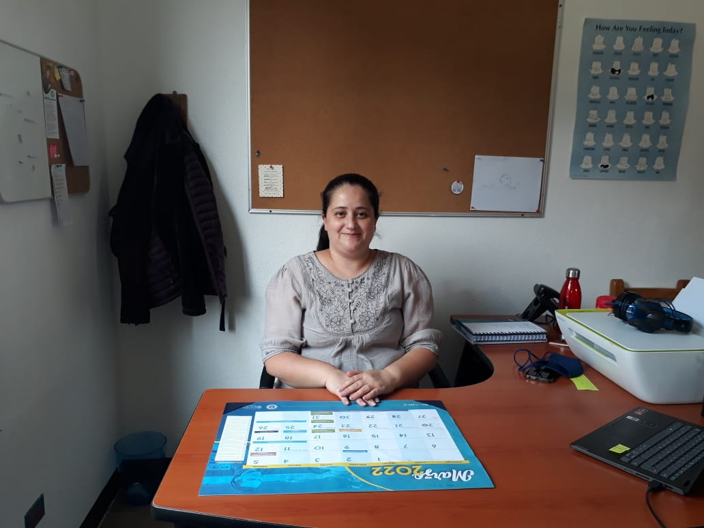
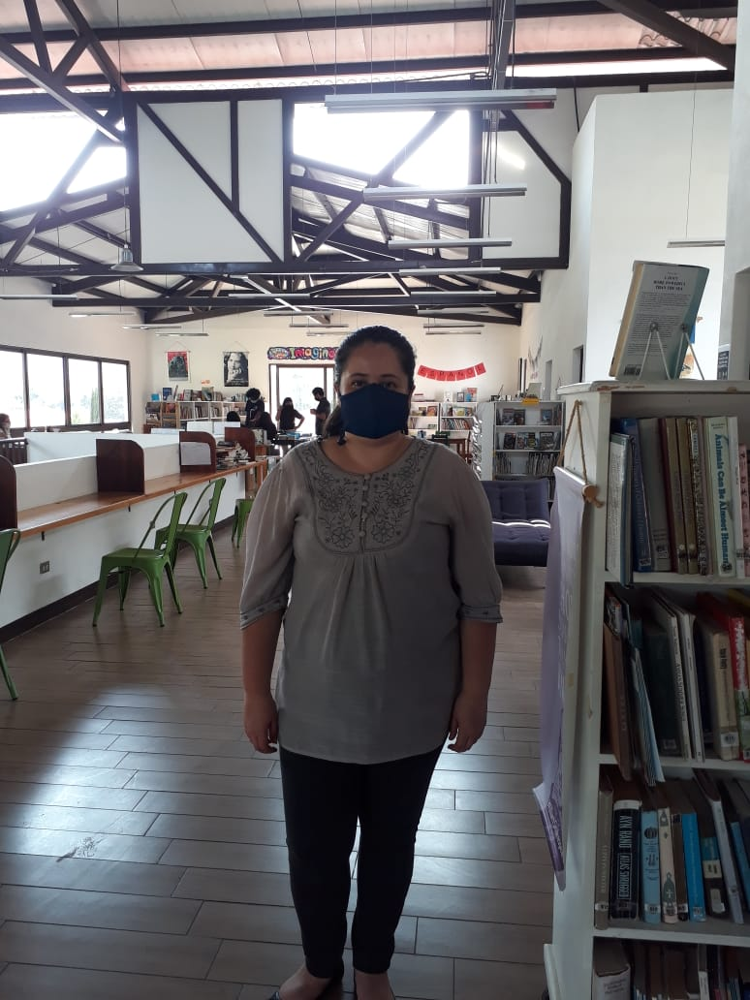
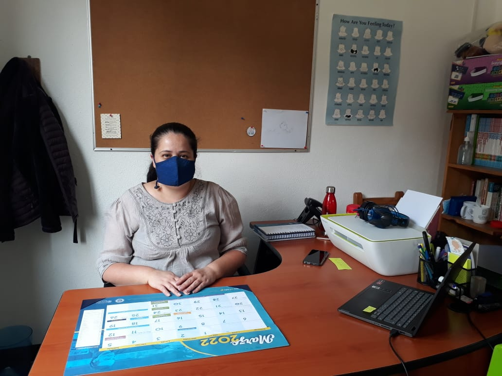

Tabla de contenidos
1) Pasatiempos y Temas Preferidos
2) Motivacion e Inspiración
3) Cambios en el Mundo y su Legado
4) Su labor a lo Largo de los Años
5) Gustos y Preferencias
Silvia Armas nació y creció en la Ciudad de Guatemala. Desde hace más de 9 años ha sido orientadora y ha ocupado otros puestos en Antigua International School. Hace aproximadamente cuatro años se mudó a San Lucas Sacatepéquez. Sus pasatiempos son bailar, ver series con su esposo, dibujar, pintar o ver videos. Es amante de los animales, en especial de los delfines, sin embargo, no tiene mascotas en casa. Disfruta leer libros de géneros como cuentos, ficción y misterio. Así mismo, sus temas preferidos son la psicología y los que tienen relación al apoyo de niños.
En mayo de 2021 su padre murió lo que le provoco un gran vacío emocional, sin embargo, la pérdida de su padre le ha servido como motivación para continuar día a día. Del mismo modo, su esposo a quien ama incondicionalmente ha sido otra de las personas que la motiva, ya que es su alegría y le da positivismo constantemente. Por otra parte, las personas que le inspiran son: su esposo como mencionamos anteriormente, su hermana mayor ya que es una persona que siempre tiene deseos de apoyar, y su amiga Magda quien siempre intenta aprender más sobre el campo de su profesión y ama a lo que se dedica.
Respecto a su entorno y el mundo en general le gustaría que las personas fueran más respetuosas y que dejaran de juzgarse unos a otros. En sus propias palabras "No necesariamente nos tenemos que comprender precisamente a todos, pero por lo menos deberíamos aceptar y ser respetuosos. Evitar juzgarnos, ya que muchas veces podemos ser muy crueles". Con relación a lo que le gustaría que fuera su legado comenta que es un tema que no tiene muy claro, sin embargo, considera que le gustaría que las personas en algún momento se sientan apoyadas o ayudadas por ella y que recuerden que ella estuvo a su lado para hacerlos mejorar en algún aspecto.
| Institución | Grado | Detalles | |
|---|---|---|---|
| - Colegio Mis Dias Felices - Colegio Mixto Belen |
- Preprimaria - Primaria |
Ya que no le gustaba demasiado dar clases a niños de preprimaria prefirió dar clases a niños de preprimaria. | |
| - Colegio Piramide - Antigua International School |
Primaria y basicos | En el Colegio Piramide por primera vez impartió clases de inglés, mientras que en AIS se ha dedicado a la psicología y orientación a los estudiantes. |
| Comida favorita | Gustos de vehículos | Serie preferida | Género favorito de música |
|---|---|---|---|
| Cocido de pollo y la milanesa | No tiene gustos por vehiculos | 911 y Doctor House | Pop de los 80's |


